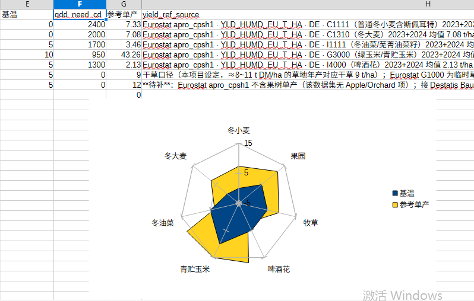
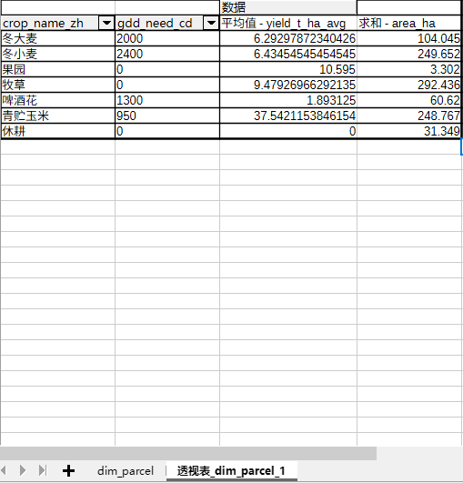
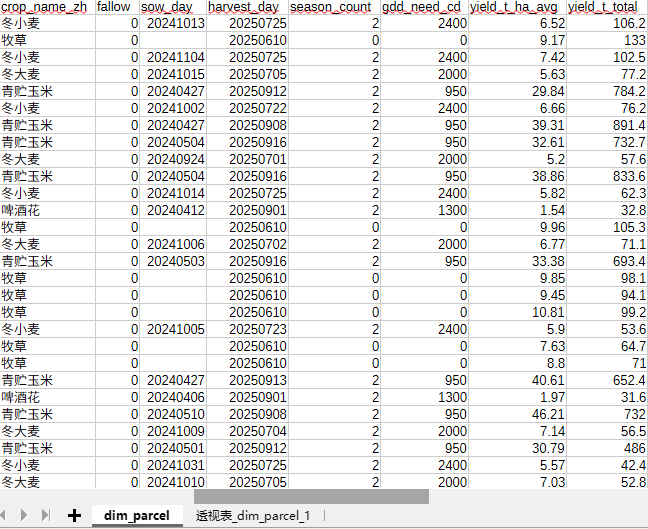

农业监测 · GIS 模拟数据平台
以一块真实地形上的行政区为底图，用确定性模型生成 501 个地块、62 个经营单元、 549 天的农事与气象数据：种植结构、积温需求、单产、运距、水肥与病害指标， 并据此做收储运距分析、收获排产与情景推演。页面纯静态，双击即可打开，无需后端与联网。
模拟数据长什么样
地图上的每一块颜色，背后都是这些表里的一行。下面四张图是同一批数据在表格工具里的样子（点击图片可看原图）。

7 个作物（冬小麦、冬大麦、果园、牧草、啤酒花、青贮玉米、冬油菜）的积温需求与参考单产对照。 基温为 0 的是多年生（果园、牧草），本就没有"播种→收获"季。

透视表：每类作物的种植面积合计与平均单产，一眼看出"谁种得多、谁产得高"。 页面上「图表 › 作物面积构成」用的就是这组数。

62 个经营单元的地块数与面积分布，并区分休耕面积。地块多不等于面积大—— 这正是页面上「经营单元」页签要按指标排序的原因。

地块级的进度：播种日、收获日、季次、积温需求与当季单产。 页面上点选任一地块，右侧「选中地块」显示的就是这一行。
基础操作
五个动作够用：看时间、看指标、点地块、翻表格、做推演。
顶部拖动条下方标有季度刻度，拖到任一位置，右侧显示具体日期，地图与表格同步切到那一天。 按 空格 播放/暂停，可选 1× / 4× / 12× 速度。
同一块地可以按单产、水肥、病害、运距等不同指标着色，图例随指标变化。 颜色只表示相对高低，具体数值在表格与「选中地块」里。
单击高亮并在右侧显示该地块的作物、播种/收获日、单产与运距；再点一次取消选中， 也可用「清除高亮」按钮一次性取消。
页签切换概览 / 经营单元 / 作物 / 收成 / 告警 / 图表 / 情景推演。点表格任意一行， 地图上对应地块会高亮——表和图是联动的，不用来回找。
右侧抽屉里是全行表格：可按关键字筛选、点表头排序、选列、导出 CSV， 还能一键生成可打印的一页报告（图片内嵌，直接 Ctrl+P）。
候选增点按「受益面积 × 平均节省时间」排布成散点，越靠右上越划算； 也能切到错峰收储的前后对照，看峰值是否被削下来。
数据口径（先说清楚，再看数）
- 是模拟数据：由确定性模型生成（同参数同结果），不是实测。表里
synthetic=1的列是模拟值。 - 哪些是真的：地形高程、行政边界、道路、水系等底图要素来自公开数据；产量、水肥、病害为模型生成。
- 土壤与分区：土壤属性留空不编造；分区建立在模拟属性之上，真分区需要 DEM、土壤图与历史产量图。
- 口径边界：多年生作物（牧草、果园）没有"播种→收获"季，因此不在收获排产表里。